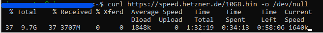
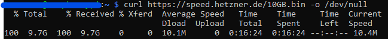
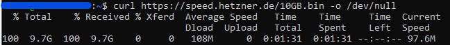
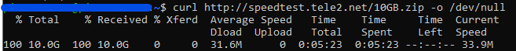

Liebe Community,
ich wollte mal nachfragen, ob einige von euch das folgende Problem bei der eigenen Verbindung reproduzieren können:
Mir ist schon in der Vergangenheit ab und zu aufgefallen, dass einige Routen nur mit einer sehr geringen Bandbreite hergestellt werden können (da mir das aber wie gesagt nur vereinzelt aufgefallen ist, waren das wohl meist nur Routen, die ich selten für die Übertragung größerer Datenmengen benutzt habe).
Nun muss ich aber häufiger beruflich auf eine Netzwerkressource zugreifen, die On-Premise bei meinem Arbeitgeber gehostet ist.
Nach unterschiedlichen Tests (iperf3, Filetransfers, etc.) kam ich irgendwann zum Schluss, dass es wohl wirklich am Peering/Routing zwischen Magenta und Kabelplus liegt.
Nach etwas rumprobieren und testen, konnte ich dasselbe Problem auch zu Servern von hetzner.de beobachten:
Download dieser Datei: https://speed.hetzner.de/10GB.bin ; Einmal über meinen Magenta-Anschluss und als Kontrolldownload auch über zwei weitere ISPs. Die Tests wurden mehrmals wiederholt (auch unterschiedliche Tageszeiten), mit minimalen Schwankungen.
Via Magenta Gaming 300 (300 Down, 50 Up): Durchschnittlich
1,8 MB/s

(man verzeihe mir, dass ich hier nicht die vollen 2 Stunden gewartet habe)
Via Brennercom (ITA; 100 Down, 20 Up): Durchschnittlich 10,1 MB/s

Via Kabelplus 1 Gig (Firmenserver): Durchschnittlich 108 MB/s

Dass es in meinem Netzwerk aber durchaus auch schneller geht, zeigt der Download einer Datei von tele2.net

Ich würde mich sehr freuen, wenn einige das mal ausprobieren könnten. Vielleicht hat ja jemand eine Idee, wie man dem Problem entgegenwirken kann.
Lg
PS/Update:
Es gibt das Problem aktuell auch, wenn ich mich zu meinem V-Server bei Strato verbinden will (immer mit der ungefähr selben Geschwindigkeit von 20-30 Mbit). Ich weiß, dass genau dieser Server auch schon mal schneller erreichbar war. Heißt, das Problem gibt es nicht seit jeher.